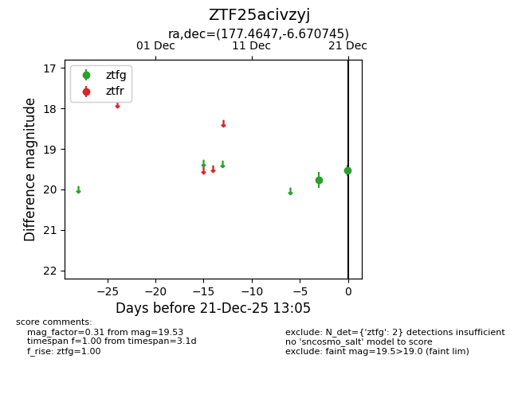
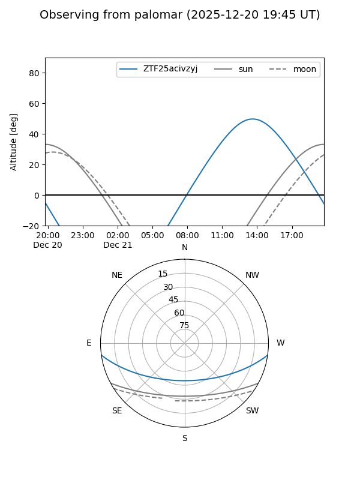
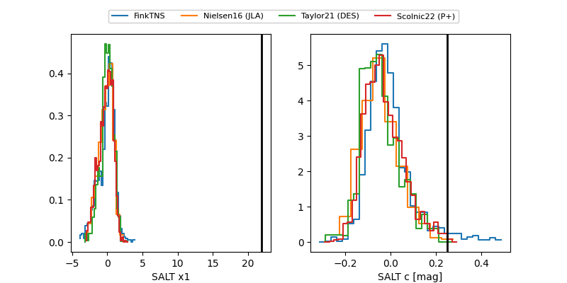

ZTF25acivzyj
Target ZTF25acivzyj at 2025-12-21 13:47
Aliases and brokers:
FINK: fink-portal.org/ZTF25acivzyj
Lasair: lasair-ztf.lsst.ac.uk/objects/ZTF25acivzyj
ALeRCE: alerce.online/object/ZTF25acivzyj
alt names
ZTF25acivzyj (ztf,fink_ztf)
Coordinates:
equatorial (ra, dec) = 177.4647,-6.67075
equatorial (HMS+DMS) = 11:49:51.53,-06:40:14.68
galactic (l, b) = (276.9079,+53.06114)
Flags:
Photometry:
last ztfg=19.53, ztfr=19.39
2 ztfg, 1 ztfr detections
Lightcurve

Visibility


Additional plots
